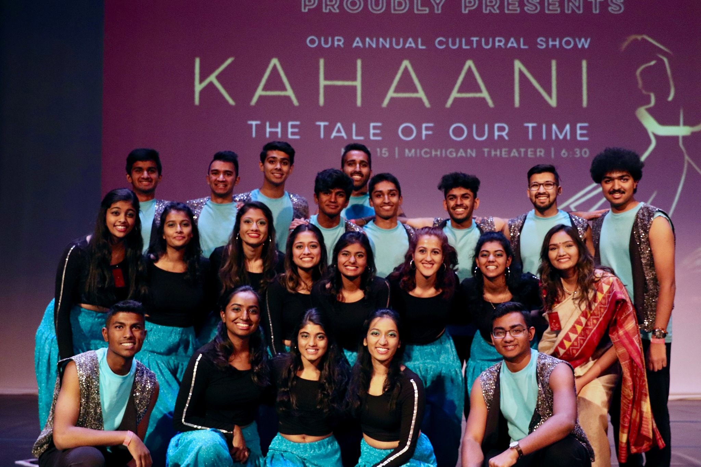
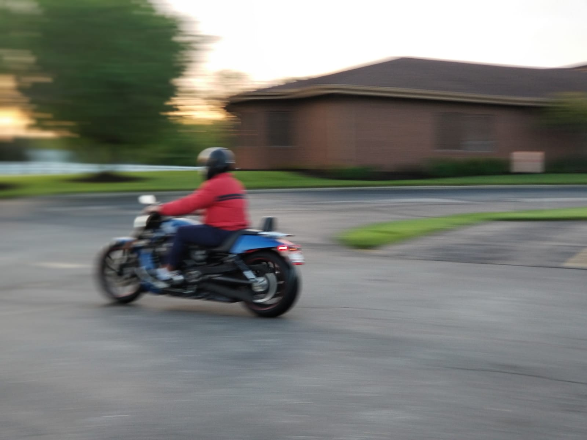

Published on December 31, 2020
Now that 2020 has almost come to an end (thankfully!), I thought I'd reflect on here a little bit about how this year has changed my life for the most part. This post is also a little something for future me to revisit and reminisce how we all made it through a pandemic.
To start, I entered the University of Michigan as an ambitious freshman last year looking to meet new people and experience college life to the fullest. I truly had a fun time, hanging out with close friends in my dorm, meeting at least one new person in the dining hall every day and walking to classes in the grueling winter. In addition, I participated in a few extracurriculars such as the Indian American Student Association, where I had a fun time attending dance practice every week, bonding with my Filmi fam (one of the best) and in the end, participating in the cultural show in November. I can only think of good memories that first semester.
After a great winter break in Florida with close family friends, the Winter 2020 semester got off to a great start. I enjoyed my new classes (especially EECS 280), and made even more friends than I could've imagined. It was around this time that coronavirus was starting to make its first steps, but none of us believed it would do much damage. Flash forward to March, and right after midterms, our classes went online. I had to leave campus that weekend. That was the moment our lives changed in an instant.
The first few weeks of online classes ("Zoom University") that semester were tough. Imagine having to wake up early for online classes and exams. There was such a sudden shift in priorities and schedules for everyone involved, including both students and professors. Getting livestreams and labs working virtually was an initial challenge. Our ENGR 100 class was hit the worst - in the end, we weren't able to prototype and build the final project we had designed (a lecture desk extender: it would've actually been of good use!). On the contrary, the final exam was cancelled (but it was kind of a relief... one less exam to study for).
That was a chaotic semester for all of us, but it felt great to finally be free after hitting the submit button on my last final, officially concluding my freshman year. At this point, I spent about a month at home. I missed my friends badly, but we often called each other on Zoom and talked about life and other issues.
Now that school was out of session and summer was in, I was determined to make the most of it. While I unfortunately didn't have a summer internship, I wanted to put my COVID summer to good use. I signed up for summer online community college courses to keep myself busy. Multivariable/vector calculus, physics electricity/magnetism, and a philosophy course kept me occupied in the mornings every week.
Outside of summer classes, I picked up some new skills, both outdoor and indoor. In May, I learned how to ride a motorcycle! My dad, an experienced rider, and I often went to the nearby church parking lot every evening and he taught me the basics of bike handling, including changing gears often and swift braking. Even after a nasty fall, numerous scrapes, and a broken rear brake, I'm eagerly waiting to get my full license and hit the roads again.
Besides motorcycles, I also worked on some personal projects, including a new refresh and design update for this website, and an app I'm hoping to get back to in the near future (JK Rentals - check out my Projects page). My goal was to gain some more experience in my web and app dev interests, and I believe I was able to successfully accomplish that with more time in the evenings.
2020 was truly a year of surprises, and this summer was no different as well. The Black Lives Matter protests, COVID restrictions, and the early stages of the 2020 election had indeed shaped up to make it one of the most interesting nevertheless. I'll never forget how we were all able to keep each other strong and optimistic despite facing tough times, including missed vacations, a cancelled commencement ceremony, and scrapped plans to meet up with friends in-person.
Even though I wasn't able to do the things I initially wanted to do, I was happy that I made my time at home worthwhile that summer. It was truly a long summer, and I really wanted to go back to school, even if it was virtual again.
When the Fall 2020 semester started, I had been at home for almost five months at that point. Even though online classes were not fun, I wanted to forge ahead and make the most of our given situation.
I took five classes this semester, including the very-heavy Data Structures and Algorithms. At the beginning of the semester, everything started off on a good note. I attended as many online classes as I could while searching and applying for internships. I stuck by a routine and it generally paid off as I started easing into the projects and strenuous assignments.
However, as the semester continued on, the workload reached a peak and I was often spending late nights working on projects. I took on a remote internship at Niiti as a Windows developer in the meantime and I split my commitments between classes and work. The semester soon became very busy at home. It was getting harder to stay motivated and focused with online classes, and I focused more on my internship project (which I really enjoyed working on!).
In addition, I was unable to work on personal projects in this time thanks to the increased workload.
Given the uncertainty around COVID and unforeseen circumstances, it was a lot tougher than I initially thought. Unfortunately, I didn't do as well as I hoped this semester. However, despite the mayhem behind this past semester, I still have a lot to be thankful for. There's a lot of lessons this past year has imparted on me.
At the time of writing, I've realized that there's only an hour left before we start a new year. I'd like to look back and talk about how all the events this year have changed me as a person.
To be completely honest, I had no idea that I'd be spending even a fraction of my college experience at home. At this point, it's been almost nine months away from Ann Arbor. While I do miss campus and all of the good times I could've spent there, I am truly happy to have spent that time with my family. I believe it's important to look for the light in every bad situation.
I got to stay with my family for nine months, something I didn't even think would happen. I cherish the increased time I spent with them, because time is precious. Once you lose it, you're not going to get it back.
In my time at home, I've also gotten more time to spend working on personal side projects and learn more outdoor skills that I've truly enjoyed. I was also able to advance credit-wise by taking online community college classes.
From this year, the main takeaway for me is that there's a lot I've personally taken for granted. This year has showed me that I should truly appreciate the many small things in life, such as time and friends. I've learned how to make the most of a negative situation, and this year has truly opened my eyes to that.
With this, I do hope that the challenge of COVID-19 is indeed over soon, and I am optimistic that I will use the lessons I've learned in my time at home to become a better person in the future. Happy New Year, and see you on the other side in 2021!
Over and out,
Nitish Vijai
{kind=link}
{kind=link}